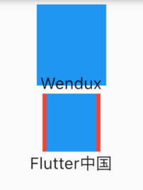

5.6 空间适配（FittedBox）
5.6.1 FittedBox
子组件大小超出了父组件大小时，如果不经过处理的话 Flutter 中就会显示一个溢出警告并在控制台打印错误日志，比如下面代码会导致溢出：
Padding(
padding: const EdgeInsets.symmetric(vertical: 30.0),
child: Row(children: [Text('xx'*30)]), //文本长度超出 Row 的最大宽度会溢出
)
运行效果如图5-13所示：

可以看到右边溢出了 45 像素。
上面只是一个例子，理论上我们经常会遇到子元素的大小超过他父容器的大小的情况，比如一张很大图片要在一个较小的空间显示，根据Flutter 的布局协议，父组件会将自身的最大显示空间作为约束传递给子组件，子组件应该遵守父组件的约束，如果子组件原始大小超过了父组件的约束区域，则需要进行一些缩小、裁剪或其他处理，而不同的组件的处理方式是特定的，比如 Text 组件，如果它的父组件宽度固定，高度不限的话，则默认情况下 Text 会在文本到达父组件宽度的时候换行。那如果我们想让 Text 文本在超过父组件的宽度时不要换行而是字体缩小呢？还有一种情况，比如父组件的宽高固定，而 Text 文本较少，这时候我们想让文本放大以填充整个父组件空间该怎么做呢？
实际上，上面这两个问题的本质就是：子组件如何适配父组件空间。而根据 Flutter 布局协议适配算法应该在容器或布局组件的 layout 中实现，为了方便开发者自定义适配规则，Flutter 提供了一个 FittedBox 组件，定义如下：
const FittedBox({
Key? key,
this.fit = BoxFit.contain, // 适配方式
this.alignment = Alignment.center, //对齐方式
this.clipBehavior = Clip.none, //是否剪裁
Widget? child,
})
适配原理
- FittedBox 在布局子组件时会忽略其父组件传递的约束，可以允许子组件无限大，即FittedBox 传递给子组件的约束为（0<=width<=double.infinity, 0<= height <=double.infinity）。
- FittedBox 对子组件布局结束后就可以获得子组件真实的大小。
- FittedBox 知道子组件的真实大小也知道他父组件的约束，那么FittedBox 就可以通过指定的适配方式（BoxFit 枚举中指定），让起子组件在 FittedBox 父组件的约束范围内按照指定的方式显示。
我们通过一个简单的例子说明：
Widget build(BuildContext context) {
return Center(
child: Column(
children: [
wContainer(BoxFit.none),
Text('Wendux'),
wContainer(BoxFit.contain),
Text('Flutter中国'),
],
),
);
}
Widget wContainer(BoxFit boxFit) {
return Container(
width: 50,
height: 50,
color: Colors.red,
child: FittedBox(
fit: boxFit,
// 子容器超过父容器大小
child: Container(width: 60, height: 70, color: Colors.blue),
),
);
}
运行后效果如图5-14所示：

因为父Container要比子Container 小，所以当没有指定任何适配方式时，子组件会按照其真实大小进行绘制，所以第一个蓝色区域会超出父组件的空间，因而看不到红色区域。第二个我们指定了适配方式为 BoxFit.contain，含义是按照子组件的比例缩放，尽可能多的占据父组件空间，因为子组件的长宽并不相同，所以按照比例缩放适配父组件后，父组件能显示一部分。
要注意一点，在未指定适配方式时，虽然 FittedBox 子组件的大小超过了 FittedBox 父 Container 的空间，但FittedBox 自身还是要遵守其父组件传递的约束，所以最终 FittedBox 的本身的大小是 50×50，这也是为什么蓝色会和下面文本重叠的原因，因为在布局空间内，父Container只占50×50的大小，接下来文本会紧挨着Container进行布局，而此时Container 中有子组件的大小超过了自己，所以最终的效果就是绘制范围超出了Container，但布局位置是正常的，所以就重叠了。如果我们不想让蓝色超出父组件布局范围，那么可以可以使用 ClipRect 对超出的部分剪裁掉即可：
ClipRect( // 将超出子组件布局范围的绘制内容剪裁掉
child: Container(
width: 50,
height: 50,
color: Colors.red,
child: FittedBox(
fit: boxFit,
child: Container(width: 60, height: 70, color: Colors.blue),
),
),
);
关于 BoxFit 的各种适配规则和 Image 的 fix 属性指定是一样的，读者可以查看我们在介绍 Image 组件时关于各种适配规则对应的效果。
5.6.2 实例：单行缩放布局
比如我们有三个数据指标，需要在一行显示，因为换行的话就会将我们的页面布局打乱，所以换行是不能接受的。因为不同设备的屏幕宽度不同，且不同人的数据也不同，所以就会出现数据太长或屏幕太窄时三个数据无法在一行显示，因此，我们希望当无法在一行显示时能够对组件进行适当的缩放以确保一行能够显示的下，为此我们写了一个测试 demo ：
@override
Widget build(BuildContext context) {
return Center(
child: Column(
children: [
wRow(' 90000000000000000 '),
FittedBox(child: wRow(' 90000000000000000 ')),
wRow(' 800 '),
FittedBox(child: wRow(' 800 ')),
]
.map((e) => Padding(
padding: EdgeInsets.symmetric(vertical: 20),
child: e,
))
.toList();,
),
);
}
// 直接使用Row
Widget wRow(String text) {
Widget child = Text(text);
child = Row(
mainAxisAlignment: MainAxisAlignment.spaceEvenly,
children: [child, child, child],
);
return child;
}
运行后效果如图5-15所示：

首先，因为我们给Row在主轴的对齐方式指定为MainAxisAlignment.spaceEvenly，这会将水平方向的剩余显示空间均分成多份穿插在每一个 child之间。
可以看到，当数字为' 90000000000000000 '时，三个数字的长度加起来已经超出了测试设备的屏幕宽度，所以直接使用 Row 会溢出，当给 Row 添加上如果加上 FittedBox时，就可以按比例缩放至一行显示，实现了我们预期的效果。但是当数字没有那么大时，比如下面的 ' 800 '，直接使用 Row 是可以的，但加上 FittedBox 后三个数字虽然也能正常显示，但是它们却挤在了一起，这不符合我们的期望。之所以会这样，原因其实很简单：在指定主轴对齐方式为 spaceEvenly 的情况下，Row 在进行布局时会拿到父组件的约束，如果约束的 maxWidth 不是无限大，则 Row 会根据子组件的数量和它们的大小在主轴方向来根据 spaceEvenly 填充算法来分割水平方向的长度，最终Row 的宽度为 maxWidth；但如果 maxWidth 为无限大时，就无法在进行分割了，所以此时 Row 就会将子组件的宽度之和作为自己的宽度。
回到示例中，当 Row 没有被 FittedBox 包裹时，此时父组件传给 Row 的约束的 maxWidth 为屏幕宽度，此时，Row 的宽度也就是屏幕宽度，而当被FittedBox 包裹时，FittedBox 传给 Row 的约束的 maxWidth 为无限大（double.infinity），因此Row 的最终宽度就是子组件的宽度之和。
父组件传递给子组件的约束可以用我们上一章中封装的 LayoutLogPrint 来打印出来：
LayoutLogPrint(tag: 1, child: wRow(' 800 ')),
FittedBox(child: LayoutLogPrint(tag: 2, child: wRow(' 800 '))),
运行后控制台日志如下：
flutter: 1: BoxConstraints(0.0<=w<=396.0, 0.0<=h<=Infinity)
flutter: 2: BoxConstraints(unconstrained)
问题原因找到了，那解决的思路就很简单了，我们只需要让FittedBox 子元素接收到的约束的 maxWidth 为屏幕宽度即可，为此我们封装了一个 SingleLineFittedBox 来替换 FittedBox 以达到我们预期的效果，实现如下：
class SingleLineFittedBox extends StatelessWidget {
const SingleLineFittedBox({Key? key,this.child}) : super(key: key);
final Widget? child;
@override
Widget build(BuildContext context) {
return LayoutBuilder(
builder: (_, constraints) {
return FittedBox(
child: ConstrainedBox(
constraints: constraints.copyWith(
//让 maxWidth 使用屏幕宽度
maxWidth: constraints.maxWidth
),
child: child,
),
);
},
);
}
}
测试代码改为:
wRow(' 90000000000000000 '),
SingleLineFittedBox(child: wRow(' 90000000000000000 ')),
wRow(' 800 '),
SingleLineFittedBox(child: wRow(' 800 ')),
运行后效果如图5-16所示:

返现 800 正常显示了，但用SingleLineFittedBox包裹的 ' 90000000000000000 ' 的那个 Row 却溢出了！溢出的原因其实也很简单，因为我们在 SingleLineFittedBox 中将传给 Row 的 maxWidth 置为屏幕宽度后，效果和不加SingleLineFittedBox 的效果是一样的，Row 收到父组件约束的 maxWidth 都是屏幕的宽度，所以搞了半天实现了个寂寞。但是，不要放弃，其实离胜利只有一步，只要我们稍加修改，就能实现我们的预期，话不多说，直接上代码：
class SingleLineFittedBox extends StatelessWidget {
const SingleLineFittedBox({Key? key,this.child}) : super(key: key);
final Widget? child;
@override
Widget build(BuildContext context) {
return LayoutBuilder(
builder: (_, constraints) {
return FittedBox(
child: ConstrainedBox(
constraints: constraints.copyWith(
minWidth: constraints.maxWidth,
maxWidth: double.infinity,
//maxWidth: constraints.maxWidth
),
child: child,
),
);
},
);
}
}
代码很简单，我们将最小宽度（minWidth）约束指定为屏幕宽度，因为Row必须得遵守父组件的约束，所以 Row 的宽度至少等于屏幕宽度，所以就不会出现缩在一起的情况；同时我们将 maxWidth 指定为无限大，则就可以处理数字总长度超出屏幕宽度的情况。
重新运行后如图5-17所示：

发现无论长数字还是短数字，我们的SingleLineFittedBox 都可以正常工作，大功告成！我们的组件库里面又多了一个组件 。